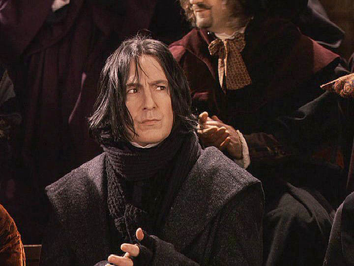

Latest SQRL News
11/07/2015
Japan's Quidditch legend visits England
Cho Chang, who was the International Quidditch World Championship overall MVP last year arrived in England yesterday. She will be touring UK and visiting various teams to offer them training
and tips on how to become a world class player.
Chang will also be on the Hogwarts National radio at 9am tomorrow so tune in to hear what she has been up to after the world championships!
06/07/2015
Severus Snape steps down as referee

Severus Snape has announced yesterday that he will officially be retiring from his position as a referee in the SQRL. Snape, the head of referees, has been a referee for 20 years to date and we will definitely miss his presence in the SQRL.
We wish him the best of luck with his adventures, and we hope to see him continuing to follow the SQRL.